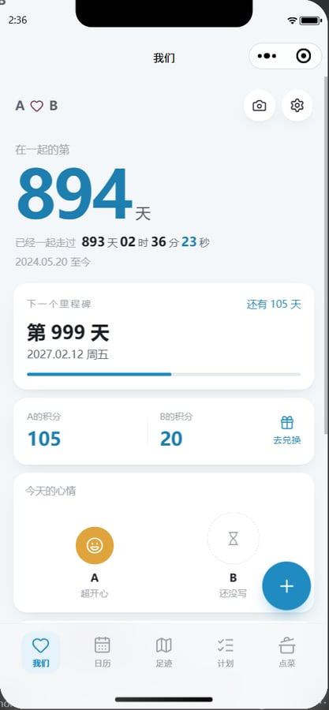
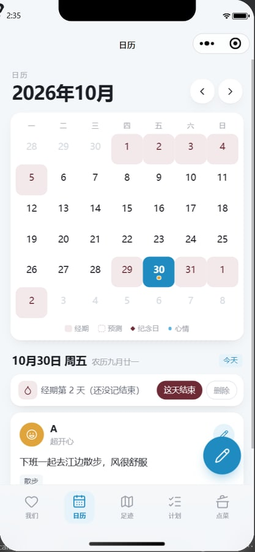
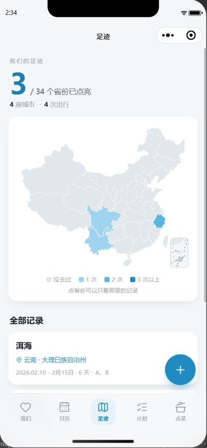
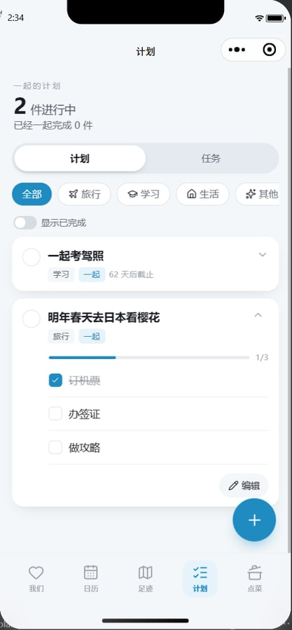
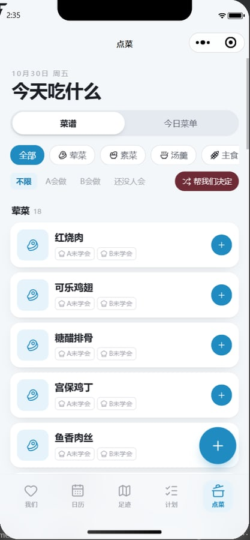
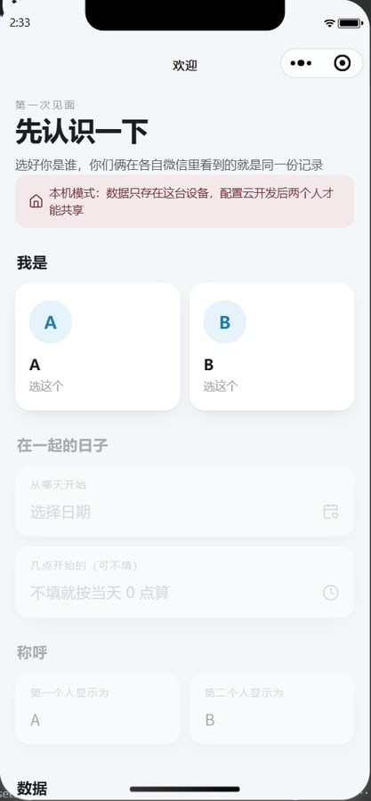
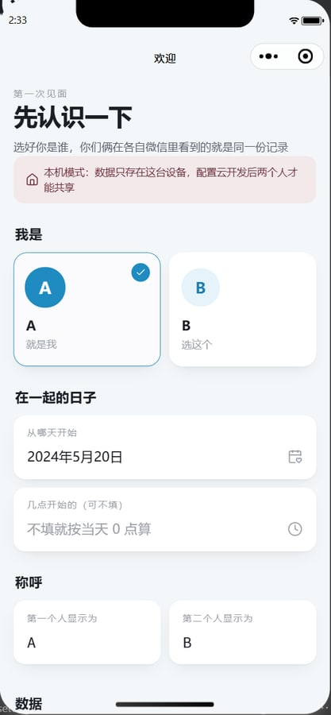
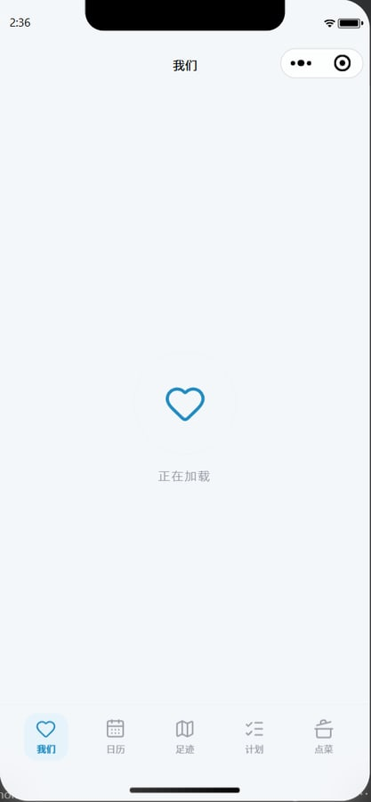

部署教程 · 公用版
我们俩
情侣小程序
从零开始，到两个人都在手机上用上



0开始之前
先花两分钟看看会得到什么、要准备什么、为什么只给你们俩用。
你会得到一个只属于你们俩的小程序
我们：在一起的天数、积分、今天的心情
日历：心情、纪念日、经期

计划：一起的计划、带积分的小任务

点菜：今天吃什么、谁会做
还有「足迹」：去过的省份在中国地图上点亮，每次旅行像朋友圈一样记照片和文字；以及「积分」：上架小奖励，用积分兑换。
需要准备
- 一台电脑（Windows 或 Mac 都可以）
- 两个人的微信：你的微信做“管理员”，另一半的微信做“体验成员”
- 一个邮箱：注册小程序用，要求没有注册过微信公众平台（公众号、小程序都没注册过）
- 管理员本人的身份证信息：个人主体注册要实名
- 源码包：朋友发给你的
我们俩-情侣小程序-源码.zip，先解压到一个好找的地方，比如 D:\couple-miniapp 或「文稿」里。路径里最好不要有空格
要花多少钱
| 项目 | 费用 |
|---|
| 注册小程序（个人主体） | 免费 |
| 微信开发者工具 | 免费 |
| 云开发「免费体验版」 | 0 元/月，每月 3000 资源点；每个账号可以开一个；到期前 1 个月内可以手动续 6 个月，不会自动续费；用完当月额度后服务会受限 |
| 云开发「个人版」（不够用再升级） | 19.9 元/月（官方标注“限时优惠”），每月 40000 资源点 |
价格来自腾讯云《云开发 CloudBase 计费》文档（2026 年 10 月 26 日更新），以你开通时控制台显示的为准。建议先用免费版，用一周后到云开发控制台看看用量：照片传得多，免费额度可能不够。
只用「体验版」，不要「发布上线」
这个小程序设计成只给你们俩用：体验版只有管理员和你添加的体验成员能打开，正好是私人空间。正式发布要先做小程序备案、过审核（个人做带照片和文字的内容类小程序容易被拒），免费云环境在发布上线后第 15 天就会到期，而且地图数据没有审图号，不能公开发布。体验版目前不受备案影响（以微信公众平台最新规定为准）。
整个流程一览
- 1注册小程序，拿到 AppID10 分钟
- 2安装微信开发者工具5 分钟
- 3打开源码，先在电脑上看效果5 分钟
- 4开通云开发，填环境 ID10 分钟
- 5部署云函数5 分钟
- 6后台三项设置：隐私、体验成员、下载域名10 分钟
- 7上传，设为体验版5 分钟
- 8两个人各自选身份，开始用5 分钟
- 9以后怎么更新、续期、换手机
- 10改成你们自己的样子（含：用 AI 帮你改）
- 11常见问题
1注册小程序，拿到 AppID
AppID 是你这个小程序的“身份证号”，后面很多地方要用。由管理员（你）来注册。
- 电脑浏览器打开 mp.weixin.qq.com，点右上角「」，选择「」。
- 填邮箱、密码、验证码，同意协议后提交。去邮箱里点激活链接。
- 信息登记：注册国家/地区选「中国大陆」，主体类型选「个人」，填管理员的姓名、身份证号、手机号，然后用管理员本人的微信扫码完成身份验证。
- 完成后用这个邮箱和密码登录后台（以后也可以用管理员微信扫码登录）。后台首页如果提示补充小程序名称、头像等信息，按提示填就行，名字随你喜欢。
- 在左侧菜单进入「」，找到「AppID（小程序ID）」，复制下来，形如
wx1234567890abcdef。
小提示微信公众平台的菜单偶尔会调整位置。找不到时，用后台页面上的搜索，或者直接找关键词（例如“开发设置”“版本管理”“成员管理”）。
2安装微信开发者工具
这是微信官方的小程序制作工具，用来打开源码、部署和上传。
- 打开 developers.weixin.qq.com/miniprogram/dev/devtools/download.html，下载稳定版（Windows 选 64 位，Mac 按你的芯片选）。
- 安装并打开，用管理员的微信扫码登录。（只有管理员或在后台被加为“项目成员”的微信，才能给这个小程序上传版本。）
先认识一下开发者工具的界面
模拟器编辑器调试器
编译预览真机调试清缓存
上传版本管理云开发详情
文件树
▸ .claude
▾ cloudfunctions
☁ api
上传并部署：云端安装依赖
▾ miniprogram
config.js
▸ tools
编辑器（改文件）
module.exports = {
envId: 'cloud1-xxxx',
loadingImage: '',
storagePrefix: 'cm:'
}
示意图，只标出这份教程会用到的位置。实际界面以你安装的版本为准，按钮名称一致。
后面会用到：顶部的「」「」「」，左边文件树里的 cloudfunctions/api 和 miniprogram/config.js。
3打开源码，先在电脑上看效果
- 开发者工具首页选「」（或菜单「项目 → 导入项目」）。
- 目录选你解压出来的
couple-miniapp 文件夹（里面能看到 miniprogram、cloudfunctions 这些文件夹的那一层）。
- AppID 填第 1 步复制的 AppID。如果出现「后端服务」选项，选「微信云开发」。点「确定」或「导入」。
- 等它编译完，左边模拟器会出现「先认识一下」页面，顶部有一条「本机模式」提示（右图）。
这时候是“本机模式”数据只存在这台电脑的开发者工具里，可以随便点点看效果。下一步连上云开发后，两个人才能共享同一份数据。
还没注册小程序也能先看：导入时 AppID 选「测试号」即可。
弹出“信任此项目”之类的提示选信任/确定即可，这是开发者工具对第一次打开的项目的例行提示。

第一次打开：选身份页（本机模式）
4开通云开发，填环境 ID
云开发是微信提供的“后端”：数据库、照片存储都在这里，两个人的数据就是靠它同步的。
- 点开发者工具顶部的「」按钮，按提示「开通」。
- 选择套餐：如果看到「免费体验版」，先选它；没有的话选「个人版」。环境名称随便填，比如
us。等它创建完成（可能要一两分钟）。
- 在云开发控制台里找到「环境 ID」（在左上角的环境名称旁，或「设置」里），形如
cloud1-3gabcdefg1234567，复制下来。注意是“环境 ID”，不是环境名称。
- 回到开发者工具，在左边文件树打开
miniprogram/config.js，把
envId: '',
改成（引号要保留，用英文单引号）
envId: 'cloud1-3gabcdefg1234567',
然后按 Ctrl + S（Mac 是 ⌘ + S）保存。
两个人的称呼不用在这里改进小程序后在「设置 → 称呼」里随时能改，比如改成小明、小红。config.js 里其他两项（加载图、存储前缀）保持默认就行。
5部署云函数
云函数 api 是小程序唯一的“后台程序”：只认你们俩的微信、负责存取数据、计算积分。要把它上传到你的云开发环境。
- 在左边文件树找到
cloudfunctions 文件夹，展开后有一个带云朵图标的 api。cloudfunctions 后面应该显示你的环境名称。
没有显示环境？右键 cloudfunctions 文件夹，在「当前环境」里选第 4 步创建的环境。
- 右键
api 文件夹，选「」。
- 等右下角提示上传成功（大约半分钟到一分钟）。
- 点顶部「」。模拟器回到选身份页，顶部的「本机模式」提示不见了；往下拉到「数据」一栏，会显示「云端同步」和你的环境 ID。这说明已经连上云端了。
数据库不用手动建小程序第一次连上云端时，云函数会自动把需要的数据库集合都建好。云开发控制台里的数据库权限保持默认的「仅创建者可读写」，不要改成所有人可读写。
部署报错 40013 之类等一两分钟再试一次通常就好；还不行就关掉开发者工具重新打开这个项目再部署。
6后台三项设置
这三项在微信公众平台后台（mp.weixin.qq.com）里设置，前两项必须做，第三项强烈建议。
6.1 用户隐私保护指引（必须，否则手机上选不了照片）
- 后台左侧「」→「」→「」，点「去完善」或「更新」。
- 在要收集的信息里勾选「选中的照片或视频信息」，用途写「上传心情、旅行、菜品和封面照片」。
- 按提示填写其他必填项后提交，等审核通过（一般很快）。
6.2 添加另一半为体验成员（必须）
- 后台左侧「」→「」→「」→「」。
- 输入另一半的微信号（不是昵称），确认后对方会收到通知。
管理员本人不用添加，默认就能打开体验版。体验成员有人数上限，以页面提示为准。
6.3 照片下载域名（建议，等传过一张照片再做）
两个人互相看对方传的照片时，小程序会把照片存在手机里，下次打开就不用重新加载。这需要把云存储的下载域名加进白名单；不加也能看照片，只是每次都要重新加载、更费流量。
- 先在小程序里随便传一张照片（例如在「日历」里写心情时附一张），让云存储里有文件。
- 在开发者工具点「」打开控制台，进入「存储」，点开刚才那张照片，复制它的下载地址开头，也就是到
.tcb.qcloud.la 为止的部分，形如 https://636c-cloud1-xxxx-1234567890.tcb.qcloud.la。
- 后台「」→「」→「」→「修改」，把它粘贴到「downloadFile 合法域名」里，保存。
7上传，设为体验版
- 回到开发者工具，点右上角「」。
- 版本号填
1.0.0，项目备注随便写，例如「第一版」，点「上传」。
- 后台左侧「」→「」，在「开发版本」里找到刚上传的版本，点「」（页面路径保持默认）。
- 页面上会出现体验版二维码。截图发给另一半，两个人都用微信扫码打开。
以后每次上传版本号都要比上一次大，例如 1.0.0 → 1.0.1。上传后同样要到「版本管理」把新版本设为体验版。
不要点「提交审核」我们只用体验版（原因见第 0 章）。
8两个人各自选身份，开始用
- 第一次打开会进入「先认识一下」页面。
- 每个人选一个身份：你选第一个（A），另一半选第二个（B）。一个身份只能绑定一个微信，选过的身份会显示已被占用。
- 先选身份的人设置「在一起的日子」（可以精确到几点）和两个人的称呼，点开始。
- 之后两个人打开看到的就是同一份数据了。
只有你们俩能用云函数只认已经绑定的两个微信。就算别人拿到体验版二维码（而且被加成了体验成员），也只能停在选身份页，选不了已被占用的身份。
从哪开始玩写今天的心情（每天 +5 积分）、记一次足迹（+10，第一次点亮一个省份再 +20）、给对方发个带积分的小任务、在首页换一张封面照片。

选好身份、设置在一起的日子
9以后怎么更新、续期、换手机
| 情况 | 怎么做 |
|---|
改了小程序里的东西（miniprogram 文件夹） | 开发者工具「上传」（版本号加一）→ 后台「版本管理」设为体验版 → 两个人退出小程序重新进 |
改了云函数（cloudfunctions/api） | 右键 api →「上传并部署：云端安装依赖」，一般也要接着上传新版本 |
| 手机上还是旧版本 | 退出小程序重新进；还不行就在微信「最近使用的小程序」里删掉它，再扫体验版二维码 |
| 免费云环境快到期 | 到期前 1 个月内，在云开发控制台手动续期 6 个月（不会自动续）。建议在手机日历里设个提醒 |
| 额度不够用 | 云开发控制台查看用量，升级为个人版等付费套餐 |
| 换手机、换微信 | 在小程序「设置」里「解除我的身份」，用新微信重新选身份，数据不会丢 |
| 想备份数据 | 云开发控制台 → 数据库，可以导出各个集合 |
10改成你们自己的样子
不用改代码就能改的
- 小程序里「设置」：在一起的日子和时间、两个人的称呼
- 首页右上角相机图标：换封面照片
- 点菜页：增删菜、标记谁会做；积分页：上架你们自己的奖励
改一行配置就能改的（miniprogram/config.js）
loadingImage：加载页和下拉刷新的动画。默认是右图的心跳动画；想换成你们喜欢的动图，把一张 gif（不超过 200K，正方形最好）放进 miniprogram/assets/loading/ 文件夹，然后填路径，例如 loadingImage: '/assets/loading/cat.gif'
微信通知（可选）对方点菜、派任务、纪念日快到时在微信里通知你：在小程序后台「功能 → 订阅消息」里选用模板，把模板 ID 填进 cloudfunctions/api/settings.js 的 notify，重新部署云函数，再右键 cloudfunctions/api →「上传触发器」。具体步骤见项目里的 README「微信通知」。
关于版权别人的形象（动漫、表情包等）有版权：你们俩自己用问题不大，但如果要把源码再分享给别人，记得先换掉。
改完保存 → 「编译」看效果 → 满意了再「上传」并设为体验版。

默认的加载动画
更大的改动：用 AI 帮你改
主题色、两个人的卡通形象头像、积分规则、加新功能……这些要改代码。源码里自带了一份给 AI 看的“项目说明书”（skill），AI 读完就知道这个项目怎么改、改完怎么测试、哪些坑要避开。
- 用 AI 编程工具打开
couple-miniapp 文件夹：
- Claude Code：在这个文件夹里启动，它会自动读到
.claude/skills/couple-miniapp
- 其他 AI 工具（Cursor、Trae、Codex 等）：第一句话告诉它「先读 AGENTS.md 和 .claude/skills/couple-miniapp/SKILL.md」
- 用大白话说你想要什么，例如：
- 「把主题色从蓝色改成樱花粉」
- 「我画了两套表情头像，放在 couple-miniapp-art 文件夹里，帮我换上」
- 「写心情的积分从 5 分改成 10 分」
- 「点菜的预设菜谱换成川菜」
- AI 改完会自己跑测试。按说明书，部署云函数、上传版本之前它会先问你；你也可以按第 5、7 步自己点。
skill 也单独打包成了 我们俩-AI-skill.zip，内容和源码里 .claude/skills/couple-miniapp 一样。
11常见问题
打开小程序提示「云函数 api 还没有部署」
第 5 步没做或没成功：右键 cloudfunctions/api 重新「上传并部署：云端安装依赖」，看到成功提示后再编译。还要确认 cloudfunctions 后面显示的环境，就是 config.js 里填的那个。
提示「云开发环境 ID 不对」
config.js 里的 envId 填错了：要填“环境 ID”（形如 cloud1-xxxx），不是环境名称；前后不要有空格，引号要用英文单引号。
手机上点「选照片」没反应或报错
第 6.1 步「用户隐私保护指引」没配置或还在审核。配置好、审核通过后，退出小程序重新进。
对方传的照片每次打开都要重新加载
做一下第 6.3 步（downloadFile 合法域名）。配置后第一次看还会加载，之后就会存在手机里。
另一半扫码打不开 / 提示没有体验权限
确认第 6.2 步加的是对方的微信号，并且对方已经确认；确认扫的是「版本管理」里的体验版二维码，不是开发版或预览二维码。
两个身份都被占了，或者选错了身份
让占着身份的那个人在小程序「设置」里「解除我的身份」，再重新选。数据不会丢。
上传了新版本，手机上还是旧的
先确认后台「版本管理」里已经把新版本设为体验版；然后退出小程序重新进，或者在微信「最近使用」里删掉它再扫码。
对方刚改的内容我这边看不到
不是实时推送的：切换一下页面，或者在页面顶部往下拉刷新就能看到。
开发者工具提示「图片和音频资源大小应不超过 200K」
你放进 miniprogram 文件夹的某张图太大了（比如换的加载图），压缩到 200K 以内再放。
云开发额度用完了，服务受限
免费体验版不能按量付费，用完要等下个月恢复，或者在云开发控制台升级为付费套餐。
可以发布上线给更多人用吗？
不建议，见第 0 章的说明。这个小程序是按“两个人自用”设计的：一个环境只能绑定两个人。
数据安全吗？
数据存在你自己的云开发环境里，别人（包括发你源码的朋友）看不到。小程序不直接读写数据库，所有操作都经过云函数，云函数只认你们俩的微信。照片存在云存储，删除记录时会一起删掉。
经期预测准吗？
只按日历推算（最近最多 6 个周期的平均），周期不规律时误差会很大，不能用来避孕。
本教程对应「我们俩 · 情侣小程序」公用版（2026 年 10 月）。价格和平台规定会变化，以微信公众平台、腾讯云的最新页面为准。地图省界数据来自阿里云 DataV.GeoAtlas，图标来自 Lucide（ISC 许可），农历换算使用 solarlunar（ISC 许可）。